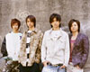
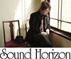

Home > 来場者の方へ > イベントステージ
イベントステージ
会場内イベントステージでは、連日、見逃せないイベントが目白押し！
スケジュールをチェックして、生でステージを見よう！
※22日（金）はビジネスデイのため、ビジネス招待者のみ観覧いただけます。
※イベントタイトルおよび、内容、時間、出演者等は変更される場合があります。
※整理券は配布いたしません。
| 9月22日（金） | |||
| 14:00〜 15:00 |
第8回 CESAスチューデントゲーム大賞 発表授賞式 「CESAスチューデントゲーム大賞」は、学生・生徒が制作したオリジナル作品の中から優秀作品を選考・表彰する制度です。今回は279作品の中から厳正なる審査の結果、10作品がノミネートされています。栄誉ある大賞は誰のどの作品に贈られるのか？未来のクリエーターの第一歩をあなたの目で確かめてください。 |
||
|---|---|---|---|
| 16:30〜 17:45 |
日本ゲーム大賞2006 優れたコンピュータエンターテインメントソフトウェア作品を選考し表彰する「日本ゲーム大賞」。本ステージでは、2005年4月から2006年3月までにリリースされた作品を対象とする「年間作品部門」、未製品化作品を対象とする「インディーズ部門」の発表授賞式を行います。この一年を代表するゲームソフトの栄冠は一体どのタイトルに？ 司会/伊集院光 前田美咲 |
||
| 9月23日（土） | |||
| 11:00〜 12:15 |
日本ゲーム大賞2006 9月22日（金）に行われた発表授賞式の模様を録画中継にてお送りします。 |
||
|---|---|---|---|
| 13:00〜 14:00 |
東京ゲームショウ10周年企画 テレビ・映画・音楽・ゲームなど、最新のエンタメ情報をお届けしている「日経エンタテインメント！」と、CS放送・フジテレビ721で放送され、現役ゲームファンからかつてのファミコン世代まで、幅広い層で話題になっているゲーム・バラエティ「ゲームセンターCX」。この2つの媒体がタッグを組み、東京ゲームショウ10周年を記念して、ゲームの世界のこの10年を振り返ります。スーパークリエーターからのスペシャルメッセージもステージ独占でお届けします！
有野晋哉（よゐこ） |
||
| 15:00〜 15:30 |
インターネットラジオステーション＜音泉＞ 国内最大級の番組数＆アクセス数を誇るゲーム・アニメ・声優系ラジオサイト、インターネットラジオステーション＜音泉＞がTOKYO GAME SHOW 2006に登場！秋の新番組の紹介や、ゲストを交えてのスペシャルトークなど、ここでしか見られないプレミアステージです。インターネットラジオを体験するなら＜音泉＞ステージを見逃すな！
|
||
| 9月24日（日） | |||
| 11:30〜 12:30 |
日本ゲーム大賞2006 東京ゲームショウ2006にて発表、展示された未発売の全作品を対象とする表彰制度「日本ゲーム大賞2006」フューチャー部門。9月22日（金）、23日（土）の2日間にわたって、会場内で来場者投票を実施し、選考委員による最終審査を経て、受賞作品が決定します。本ステージでは決定したばかりの受賞作品をいち早く発表！受賞タイトルの制作者もステージに掛けつける予定です。ぜひお見逃しなく！ 司会/前田美咲 |
||
|---|---|---|---|
| 13:00〜 14:30 |
セレンディピティ 携帯電話特化型女性向け恋愛シミュレーションゲーム「マージナルプリンス〜月桂樹の王子達〜」のゲーム紹介および、アニメ第一話映像の一部先行公開を行います。声優陣によるトークショーや主題歌お披露目ライブなど、盛りだくさんの内容！このほか、セレンディピティの新作ゲーム紹介も。

FLAME SCARECROW |
||
| 15:00〜 15:30 |
ELEVEN-UP 幻想楽団「Sound Horizon」とファンタジーオンラインRPG「ベルアイル」が楽曲タイアップを実現。「Sound Horizon」の領主Revoが『ベルアイル』の世界観をベースにして新たに書き起こした楽曲「神々が愛した楽園」を含む、合計3曲のスペシャルライブイベントを行います。

RIKKI（リッキ） |
||
| 16:00〜 16:55 |
CESAチャリティーオークション 東京ゲームショウ2006を締めくくる、毎年恒例の「CESAチャリティーオークション」。毎年、出展社やCESA会員企業から、東京ゲームショウならではのレアグッズが多数出品されます。収益金は、ユニセフを通じて世界の恵まれない子どもたちに寄付されます。TGSの来場記念にぜひ参加して、素敵なグッズをゲットしよう！ |
||